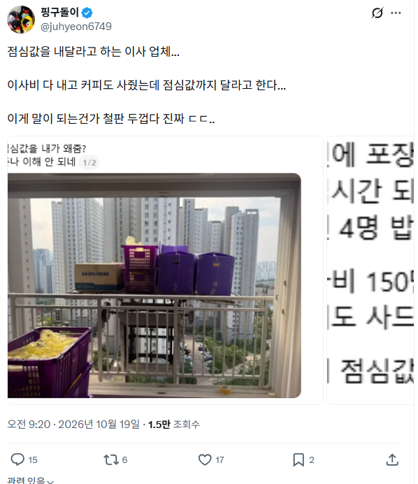
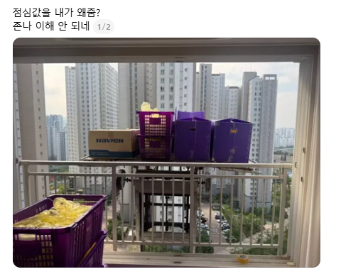
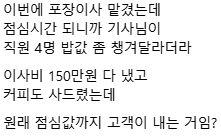

옛날에는 사줬는데 요샌 다포함아닌가
러시아 용병 고용해야지, 신라면 한박스면 퉁
요즘엔 안사줄걸?
예전엔 사준거같은데
커피값 목욕값 점심값 ㅋㅋ
저거 약간 현장직 지들 관행임. 저거 아니더라도 노가다쪽이면 저러는 경우 왕왕 있는데 이사는 거시기하네 ㅋㅋ
인부들 밥 사주는건 국룰 아녔음???
그걸
왜 내가
사줌 ㅋ
이사비 결제할때 점심값도 포함됐는지 알아봐야함
이사업체: 커피ㅜㅜ
나: 안줘 시발아
밥값은 아니고 엄마가 이사할때 목욕비 명목으로 인당 3만원정도 봉투에 넣어서 주시기는 하더라. 옛날사람들의 관행이긴한가 봄..
예전에는 밥값 주거나 밥 주문해주고그랬었음
요새는 일절요구없다하고 주지도말라고하던데
그 자리에서 바로 고객센터 전화해서 개지랄 떨어버리기~
솔직히 ㅈ같긴해도 주고 잘부탁한다고 말하는게 속편함
나는 그냥 알아서 줬음 좋은게 좋은거라고 좋은날이니
도대체 왜 주는거임? 나는 이해가 안가는데. 자기들 업종이고 영업 뛰어서 돈버는 일인데 굳이 돈 받고 하는 일에 밥까지 얻어 먹어야하나? 밥 처먹고 안처먹고는 자기가 알아서 하는 거 아니야? 커피 하나 or 박카스 하나 주는것도 고마워 해야할거같은데 왜 줌??
밥챙겨주는게 당연하다는 애들 여자들 자발적 시녀짓이 어쩌구할때는 댓글 안달았지?
나 대학생때 이사알바 좀 해봤는데 집주인이 챙겨준적없음. 가끔 커피나 빵정도는 챙겨주심
챙겨주심 고맙지만 안챙겨줬다고 불만생기지않음. 솔까 일하는 입장에서 고용,계약을 이사고객이랑 한게 아니라 이사업체랑 한거지.
이사알바했을때 기준 ㅈ같은건 냉장고,TV,침대 등등 안옮긴다고 했거나 얼마없어요 했는데 다 챙겨달라고 해놓고
추가비용갖고 ㅈㄹ할때가 ㅈ 같음. 밥은 노상관
이래서 나는 돈내고 이용하는 서비스에 따로 팁이니 뭐니 챙겨주는 사람 안좋아함
그게 쌓이면 의무가 되버림
받는 사람도 처음엔 고마워하다가 나중엔 왜 저사람은 안줘? 이럼
비슷한 예로 아까 개드립 올라왔던 여자들 미용실이나 네일샵 썰이 있음
집에 가져갈려고 산 빵을 짐 맡길때 같이 맡기니 당연히 자기들 주는줄 알고 다먹었다는썰
이거랑 별차이 없음
이전에 누군가는 이사하는 사람들 조금더 신경써달라는 의미로 혹은 고맙다고 사줬을거임
그게 반복되니 이젠 당연한게 되고 의무가 되버린 지경인거임
그러니 고객한테 당당하게 밥값 달라고 요구하는거지